Integración SCADA mediante Modbus Serial ASCII y OPC
Configurar el camino completo de los datos: desde la memoria del PLC hasta una pantalla SCADA.
Trabajo en laboratorio
Producto verificable
¿Qué aprenderemos a hacer?
Propósito de la experiencia
Integrar un PLC Delta DVP-SE con KEPServerEX mediante Modbus Serial ASCII y exponer sus variables a Infilink por medio de OPC.
Producto observable
- Programa Ladder entregado, cargado y monitoreado.
- Canal, dispositivo y tags creados.
- Datos con calidad Good en OPC Quick Client.
- Pantalla SCADA con lectura y escritura comprobadas.
Alcance: primera experiencia de Comunicación Industrial / Plataforma SCADA. No incluye el módulo DVP04TC ni transmisores de temperatura.
Problema: dosificación en un tanque de mezcla
Contexto industrial
Una estación supervisa el llenado y la descarga de un tanque de mezcla. El operador debe iniciar, detener, reiniciar y observar el avance del proceso desde una interfaz SCADA.
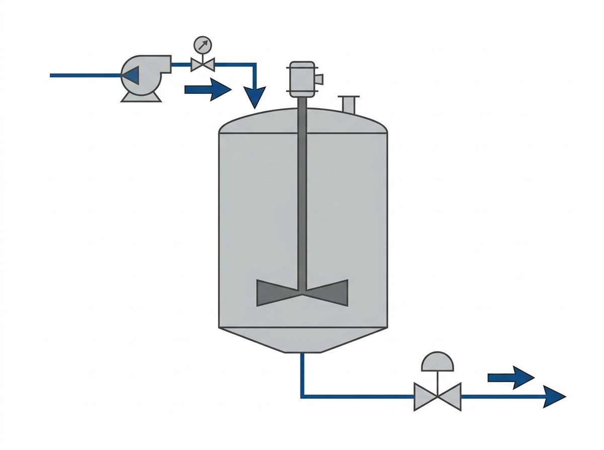
Pregunta de entrada
¿Qué variables deberá escribir el operador y cuáles deberá leer para saber si el ciclo funciona correctamente?
El programa Ladder forma parte del material entregado
1 · Retención
Bomba y válvula mantienen su estado hasta una nueva orden, una condición de término o una detención.
2 · Temporización
Un temporizador controla el tiempo de llenado y se reinicia al terminar el ciclo o al ejecutar RESET.
3 · Conteo
Un contador registra ciclos completados y el programa expone el avance parcial del ciclo actual.
4 · Conversión
Una rutina aislada convierte un valor entero a flotante IEEE-754 para observarlo desde SCADA.
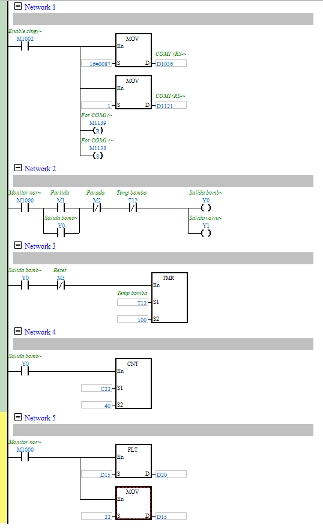
El dato atraviesa tres sistemas
Modbus ASCII⇄
según el cliente⇄
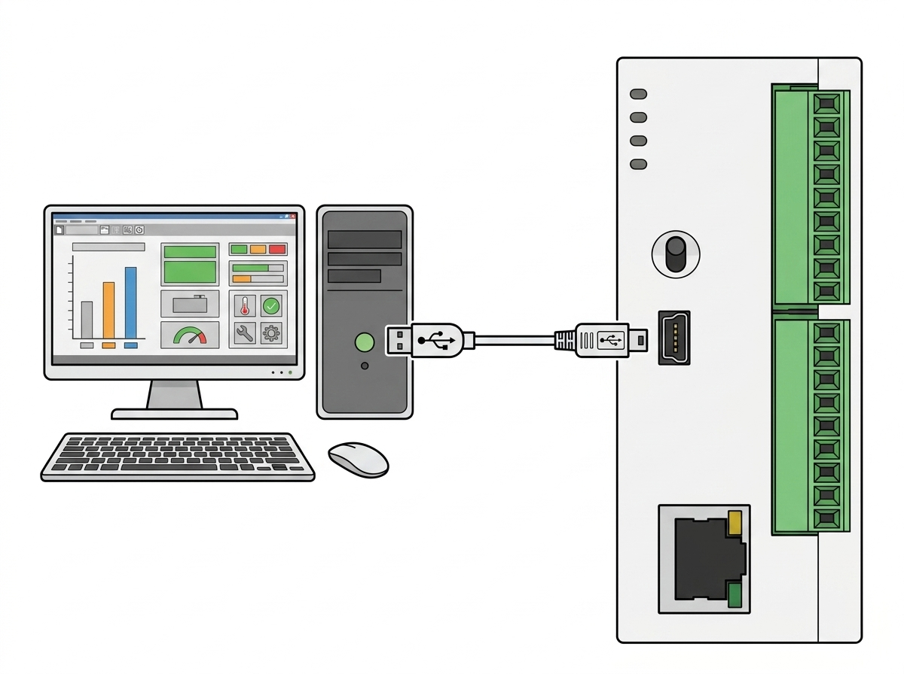
¿Qué significa “servidor OPC”?
Adquiere
El servidor usa un driver para comunicarse con equipos de campo mediante su protocolo: en esta guía, Modbus Serial ASCII.
Normaliza
Transforma direcciones y tipos de datos del equipo en variables con nombres comprensibles: los tags.
Publica
Permite que clientes OPC —como un SCADA— naveguen, lean y, cuando corresponda, escriban esas variables.
Canal, dispositivo y tag no son lo mismo
Antes de abrir KEPServerEX
Escribe el nombre que usarás para el canal, el dispositivo y tres tags. Evita espacios, tildes y nombres como Tag1 o PLC1 sin contexto.
Primero: confirmar el puerto y los parámetros
Conecta el PLC
Espera a que Windows reconozca el adaptador.
Identifica el COM
Administrador de dispositivos → Puertos (COM y LPT). Registra el número exacto.
Compara ambos extremos
PLC y KEPServerEX deben usar exactamente el mismo formato serial.
| Parámetro | Valor de trabajo |
|---|---|
| Puerto | COM____ |
| Modo | Modbus ASCII |
| Velocidad | 9600 bit/s |
| Bits de datos | 8 |
| Paridad | Even / Par |
| Bits de parada | 1 |
| Control de flujo | None / Ninguno |
| Dirección PLC | 1 |
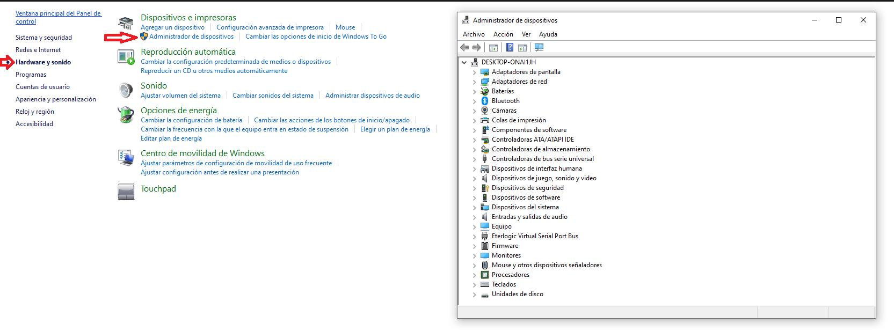
Las primeras redes configuran COM1 del PLC
M1002
Pulso de primer ciclo. Estas instrucciones se ejecutan una vez cuando el PLC pasa a RUN.
D1036 + H87
D1036 es el registro de formato de COM1. H87 codifica ASCII, 9600 bit/s, 8 bits, paridad par y 1 stop.
M1138 / M1139
M1138 aplica la configuración. M1139 distingue RTU de ASCII; para esta experiencia debe permanecer OFF.
Lectura guiada del programa Ladder entregado
Direcciones tomadas de la tabla Modbus de Delta
| Dispositivo | Base Modbus | Ejemplo |
|---|---|---|
| Y0 | 001281 | Y1 = 001282 |
| T0 · bit | 001537 | T1 · bit = 001538 |
| T0 · palabra | 401537 | T1 · palabra = 401538 |
| M0 | 002049 | M2 = 002051 |
| C0 · bit | 003585 | Estado de contador |
| C0 · palabra | 403585 | Valor acumulado |
| D0 | 404097 | D20 = 404117 |
Fuente: Modbus address table of Delta DVP series PLC, documento proporcionado para la experiencia.
Mapa de intercambio que utilizará la experiencia
| Tag OPC | Dispositivo PLC | Dirección KEPServerEX | Tipo | Acceso |
|---|---|---|---|---|
| Cmd_Start | M0 | 002049 | Boolean | Read/Write |
| Cmd_Stop | M1 | 002050 | Boolean | Read/Write |
| Cmd_Reset | M2 | 002051 | Boolean | Read/Write |
| Bomba_Activa | Y0 | 001281 | Boolean | Read Only |
| Valvula_Activa | Y1 | 001282 | Boolean | Read Only |
| Llenado_Finalizado | T0 · bit | 001537 | Boolean | Read Only |
| Tiempo_Llenado | T0 · palabra | 401537 | Word | Read Only |
| Tiempo_Descarga | T1 · palabra | 401538 | Word | Read Only |
| Contador_Completo | C0 · bit | 003585 | Boolean | Read Only |
| Ciclos_Totales | C0 · palabra | 403585 | Word | Read Only |
| Entero_Prueba | D10 | 404107 | Short | Read/Write |
| Valor_Float | D20-D21 | 404117 | Float | Read Only |
KEPServerEX · Paso 1: crear el canal
New Channel
Nombre sugerido: Canal_Modbus_ASCII.
Driver
Selecciona Modbus Serial. No elijas Modbus Ethernet.
Puerto y formato
Selecciona el COM registrado y configura 9600, 8, Even, 1, sin control de flujo.
Diagnóstico
Habilita diagnóstico durante la puesta en marcha y finaliza el asistente.
| Campo | Configuración | ¿Por qué? |
|---|---|---|
| Name | Canal_Modbus_ASCII | Identifica el enlace compartido. |
| Driver | Modbus Serial | Interpreta las tramas del PLC. |
| COM ID | COM____ | Selecciona el puerto físico/virtual. |
| Baud / Data / Parity / Stop | 9600 / 8 / Even / 1 | Debe coincidir con el PLC y con H87. |
| Flow Control | None | Configuración de esta experiencia. |
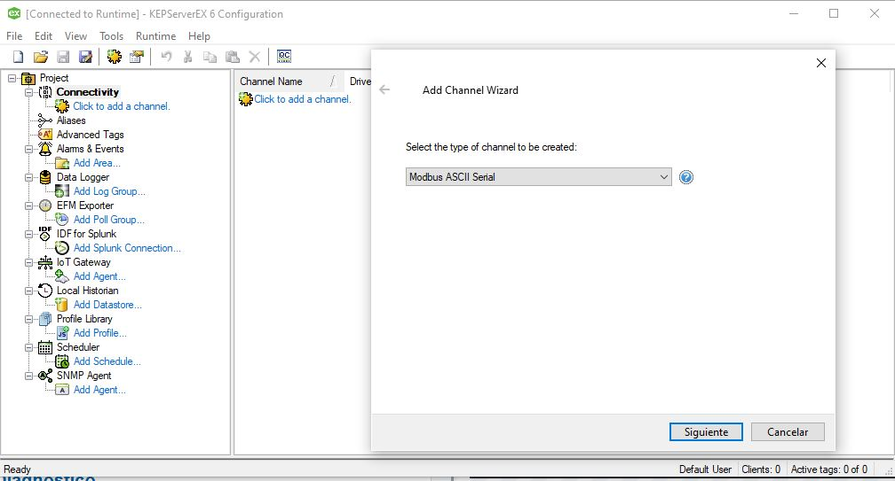
KEPServerEX · Paso 2: crear el dispositivo
El dispositivo representa al PLC
Haz clic derecho sobre Canal_Modbus_ASCII → New Device. Nombre sugerido: PLC_Delta_SE.
└── PLC_Delta_SE
| Campo | Valor de trabajo |
|---|---|
| Model / Protocol | Modbus ASCII |
| Device ID / Unit ID | 1 |
| Scan mode | Respect client-specified scan rate |
| Timeout / retries | Valores iniciales del asistente; ajustar solo con evidencia |
| Simulation | Disabled / False |
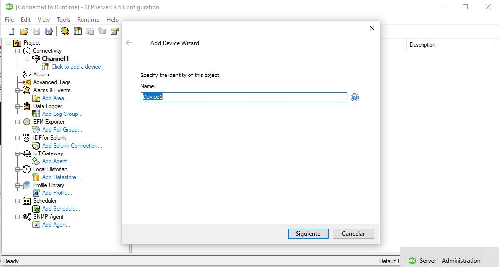
KEPServerEX · Paso 3: crear el primer tag
Selecciona el dispositivo
Clic derecho sobre PLC_Delta_SE → New Tag.
Completa Name y Address
Name: Cmd_Start
Address: 002049
Define el comportamiento
Data Type: Boolean
Client Access: Read/Write
Scan Rate: 500 ms
Aplica y verifica
Presiona Apply. Confirma que el tag aparezca debajo del dispositivo sin indicador de dirección inválida.
Anatomía del tag
Name es el nombre que verá Infilink. Address es la dirección Modbus. Data Type define cómo interpretar los bits. Client Access limita lectura o escritura.
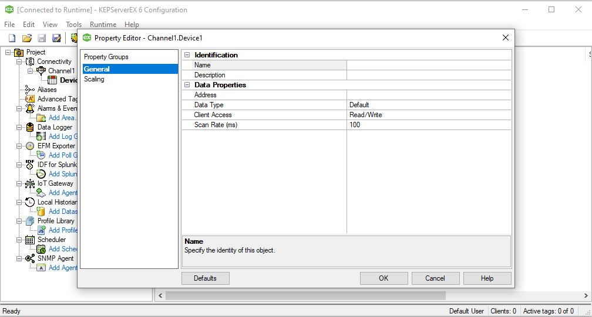
KEPServerEX · Paso 4: completar la base de tags
| Name | Address | Data Type | Client Access | Scan |
|---|---|---|---|---|
| Cmd_Start | 002049 | Boolean | Read/Write | 500 ms |
| Cmd_Stop | 002050 | Boolean | Read/Write | 500 ms |
| Cmd_Reset | 002051 | Boolean | Read/Write | 500 ms |
| Bomba_Activa | 001281 | Boolean | Read Only | 500 ms |
| Valvula_Activa | 001282 | Boolean | Read Only | 500 ms |
| Llenado_Finalizado | 001537 | Boolean | Read Only | 500 ms |
| Tiempo_Llenado | 401537 | Word | Read Only | 500 ms |
| Tiempo_Descarga | 401538 | Word | Read Only | 500 ms |
| Contador_Completo | 003585 | Boolean | Read Only | 500 ms |
| Ciclos_Totales | 403585 | Word | Read Only | 500 ms |
| Entero_Prueba | 404107 | Short | Read/Write | 500 ms |
| Valor_Float | 404117 | Float | Read Only | 500 ms |
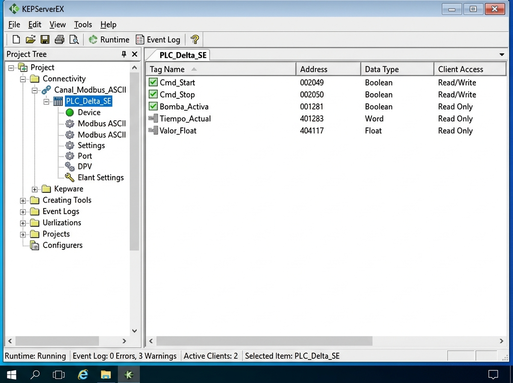
Validar el servidor antes de diseñar el SCADA
Abrir OPC Quick Client
Navega por el canal y el dispositivo.
Observar tres evidencias
Value, Quality y Timestamp.
Forzar cambios reales
Acciona el programa o escribe una orden autorizada y confirma que el valor cambia.
| Indicador | Interpretación |
|---|---|
| Good | El servidor obtuvo un valor válido. |
| Bad | Hay un problema de dirección, dispositivo, canal o comunicación. |
| Uncertain | El valor existe, pero su confiabilidad requiere revisión. |
| Timestamp | Permite comprobar cuándo se actualizó el dato. |
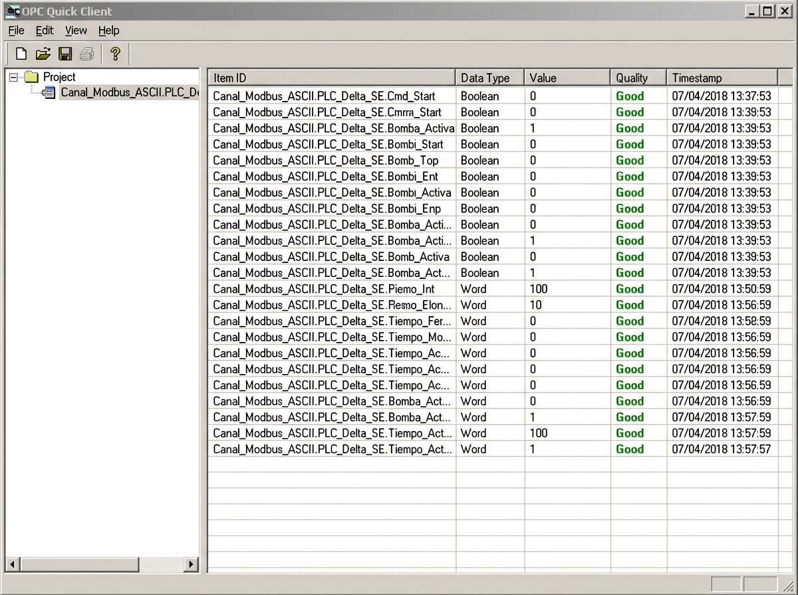
Si aparece Bad, diagnostica por capas
| Capa | Pregunta | Comprobación |
|---|---|---|
| Física | ¿El PLC y el adaptador están conectados? | Alimentación, cable, LED y Administrador de dispositivos. |
| Puerto | ¿El COM existe y está libre? | Cerrar ISPSoft/WPLSoft u otra aplicación que lo esté usando. |
| Canal | ¿Los parámetros seriales coinciden? | COM, 9600, 8, Even, 1, None y modo ASCII. |
| Dispositivo | ¿KEPServerEX consulta al PLC correcto? | Unit ID = 1, modelo ASCII y simulación desactivada. |
| Tag | ¿Dirección y tipo son correctos? | Revisar tabla Modbus, seis dígitos, tipo y orden de palabras. |
| Programa | ¿La memoria realmente cambia? | Monitorear el registro o bit en ISPSoft/WPLSoft, sin ocupar simultáneamente el COM. |
Infilink · Paso 1: crear y guardar el proyecto
Abrir Infilink-HMI
Trabaja en modo de diseño, no en Runtime.
Crear un proyecto nuevo
Usa File → New Project o la opción equivalente de la versión instalada.
Nombrar y guardar
Nombre sugerido: LAB01_SCADA_MODBUS. Guarda en una carpeta propia antes de crear tags.
Crear la ventana principal
Nombre: Proceso_Dosificacion. Define un tamaño coherente con el monitor del laboratorio.
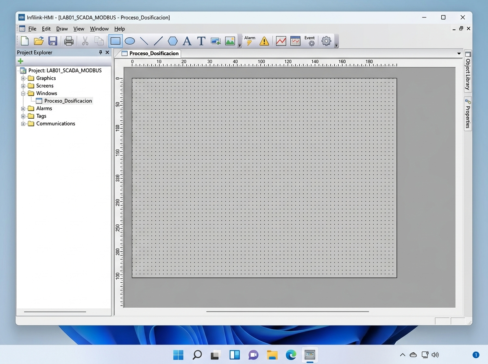
Infilink · Paso 2: crear el grupo OPC
Abrir Tags Group
Presiona el icono Tags Group. Aparecerán los grupos y tags de sistema.
Crear un grupo
Selecciona New Group. Nombre sugerido: OPC_Proceso.
Seleccionar Program ID
Presiona el botón … del campo Program ID y elige el servidor KEPServerEX instalado.
Confirmar el servidor
Acepta y comprueba que OPC_Proceso aparezca dentro de Tags Group.
¿Qué se acaba de crear?
Un grupo de tags de Infilink asociado a un servidor OPC. Todavía no contiene las variables del proceso; solo define de qué servidor se obtendrán.
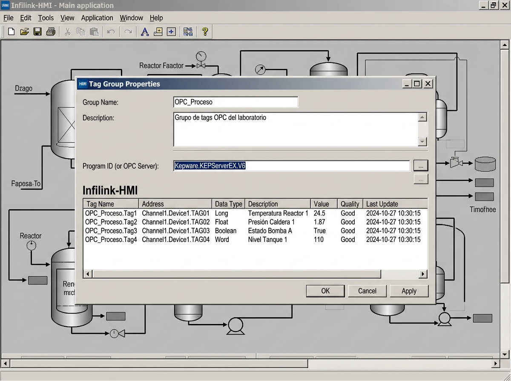
Infilink · Paso 3: buscar y agregar los tags
- Selecciona el grupo OPC_Proceso.
- Presiona New Tag.
- En el campo del item OPC, presiona el botón ….
- En Tag Browser despliega Canal_Modbus_ASCII → PLC_Delta_SE.
- Selecciona un tag, confírmalo y revisa el tipo de dato detectado.
- Repite hasta incorporar todas las variables del mapa.
| En KEPServerEX | En Infilink |
|---|---|
| Boolean | Discreto / Boolean |
| Word o Short | Entero compatible |
| Float | Real / Floating point |
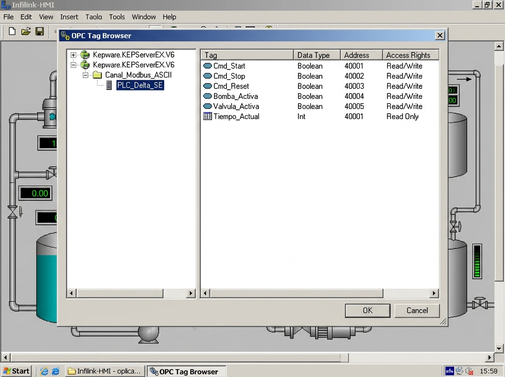
Infilink · Paso 4: probar un tag antes de diseñar todo
1 · Valor numérico
Inserta un objeto de texto/valor y enlázalo a Ciclos_Totales. Debe mostrar el contenido de C0.
2 · Indicador
Inserta un círculo o lámpara y configura animación de color con Bomba_Activa.
3 · Orden momentánea
Inserta un botón START que escriba True al presionar y vuelva a False al soltar, enlazado a Cmd_Start.
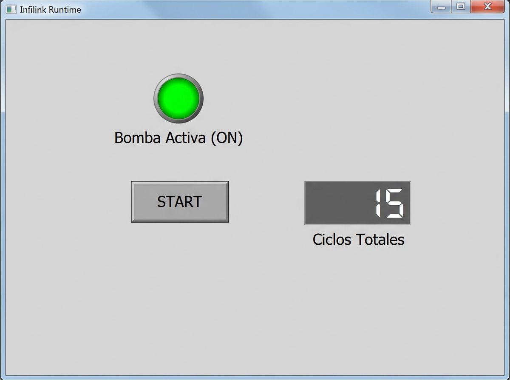
Diseñar una pantalla funcional y comprobable
Órdenes
- START
- STOP
- RESET
Enlazadas solo a tags de comando con permiso de escritura.
Estados
- Bomba
- Válvula
- Temporizador
- Contador
Color y texto deben indicar claramente ON/OFF.
Valores
- Tiempo de llenado
- Tiempo de descarga
- Ciclos totales
- Entero y valor flotante
Incluye unidad o significado.
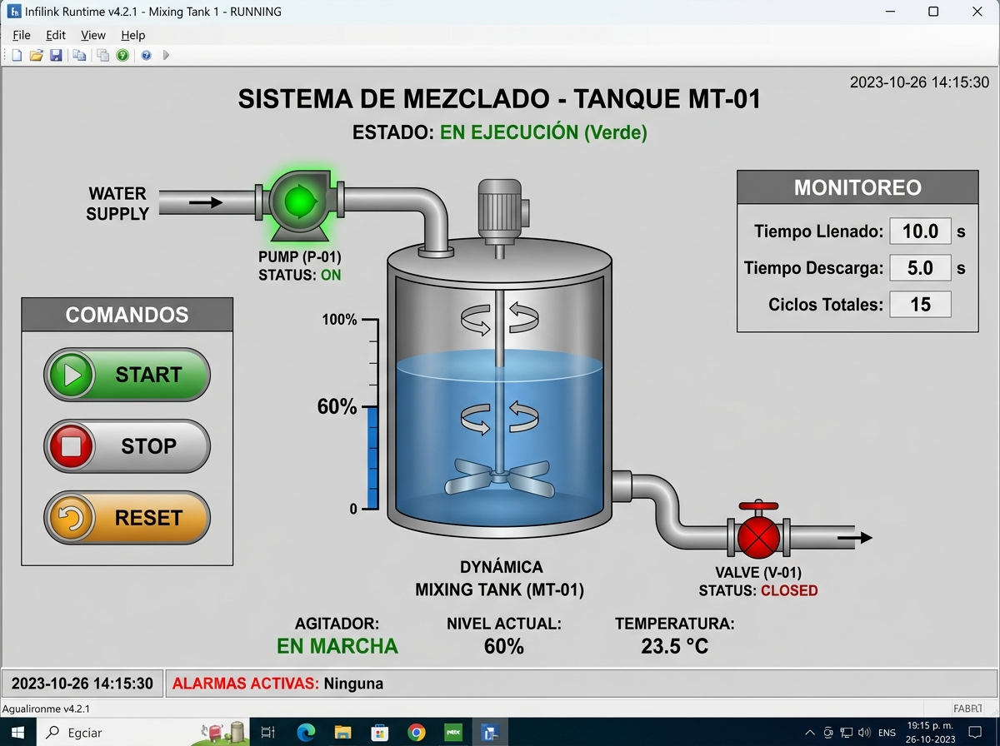
Pruebas de aceptación del sistema
| N.º | Acción | Respuesta esperada | Resultado |
|---|---|---|---|
| 1 | Activar START desde SCADA. | El PLC recibe la orden y activa la secuencia. | □ Cumple □ No cumple |
| 2 | Observar Bomba_Activa. | OPC Quick Client e Infilink muestran el mismo estado. | □ Cumple □ No cumple |
| 3 | Esperar el tiempo programado. | Tiempo_Llenado cambia y Llenado_Finalizado se activa. | □ Cumple □ No cumple |
| 4 | Completar un ciclo. | Ciclos_Totales aumenta una unidad. | □ Cumple □ No cumple |
| 5 | Activar STOP. | El proceso se detiene según la lógica definida. | □ Cumple □ No cumple |
| 6 | Activar RESET. | Se reinician los elementos definidos por el programa. | □ Cumple □ No cumple |
| 7 | Modificar el entero de prueba. | Valor_Float muestra la conversión esperada. | □ Cumple □ No cumple |
| 8 | Desconectar temporalmente el enlace. | La calidad deja de ser Good y el SCADA evidencia la pérdida. | □ Cumple □ No cumple |
Entregables y evaluación
Archivos y evidencias
- Copia identificada del programa Ladder entregado.
- Proyecto KEPServerEX exportado.
- Proyecto Infilink.
- Mapa de variables comprobado.
- Capturas de canal, dispositivo, tags y OPC Quick Client.
- Capturas del Tag Group, Tag Browser y primera prueba Infilink.
- Tabla de pruebas de aceptación.
| Criterio | Peso |
|---|---|
| Explica arquitectura Modbus-OPC-SCADA | 10% |
| Interpreta el Ladder y la configuración COM1 | 10% |
| Configura correctamente el canal | 15% |
| Configura dispositivo y Unit ID | 10% |
| Crea tags con direcciones Delta correctas | 20% |
| Crea Tag Group e importa tags en Infilink | 15% |
| Implementa la pantalla y las pruebas | 10% |
| Valida y diagnostica con evidencia | 10% |
| Total | 100% |
Un SCADA confiable comienza con datos trazables
Cada objeto de la pantalla debe conducir a un tag, una dirección, una memoria del PLC y una función real del proceso.
Quality · Timestamp · Evidencia
Referencias de apoyo: guía original del laboratorio; tabla de direcciones Modbus Delta proporcionada; documentación de KEPServerEX/Modbus Serial; manual de programación Delta DVP-ES2/EX2/SS2/SA2/SX2/SE; documentación de Infilink-HMI.